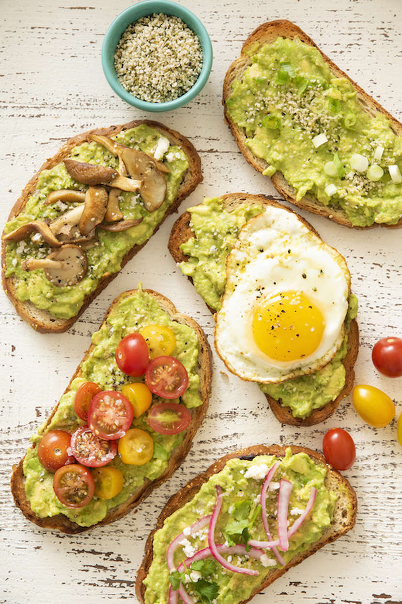

Avocado Toast
Avocado toast is my go-to breakfast food. And either adding a fried egg on top or just red pepper flakes makes all the difference to a food some people may call “basic.” This food is my comfort food; it makes me feel classy even if I am not doing so hot at the moment.
Poached Eggs
Eggs in general are a really good protein to eat. They are filled with lots of nutrients including vitamin D and have shown to reduce the risk of heart disease and a stroke. I eat poached eggs because it is satisfying to see the yolk ooze out when you cut into the egg, and the process of making an egg is also very relaxing to hear the noise of the butter sizzling on the pan or the water boiling with steam rising out of the pot.

Pesto Pasta
Pasta is my all time favorite food but specifically cheese tortellini with a little bit of pesto sauce is to die for. When I am having a bad day, pasta is another one of my comforts which is okay! I’m always concerned about what I am putting into my body but also, smaller portion sizes of foods you know you shouldnt eat all the time is more important. Pesto is a great sauce because it is packed with antioxidants to help with blood pressure and to keep your body strong.